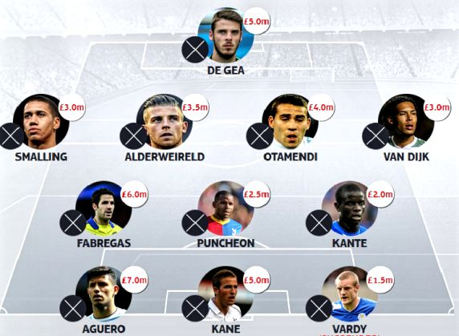

The Chelsea Wire provides the latest Chelsea Football Club News.
Chelsea Football Club is a professional football club based in Fulham, London. Chelsea have won five national league titles, seven FA Cups, five League Cups and four FA Community Shields, one UEFA Champions League, two UEFA Cup Winners' Cups, one UEFA Europa League and one UEFA Super Cup.
Keep the Blue Flag Flying High.
Bournemouth 1-4 Chelsea
4/16/16
Chelsea 0-3 Man City
4/23/16
Chelsea vs. Tottenham
5/2/16
Sunderland vs Chelsea
5/7/16
Headlines
Conte appointed Manager
April 28,2016 - Antonio Conte will step down from his position as manager of Italy following Euro 2016. Conte has been heavily linked with the managerial vacancy at Chelsea and this move increases the prospect of him taking over at Stamford Bridge. The 46-year-old was appointed Italy manager in August 2014 shortly after resigning as coach of Juventus
April 28,2016 - Barclays Player of the Year 2014, Eden Hazard, has been tempted by a mega offer by Parisian club PSG. The offer is believed to eclipse the $100m world record fee paid by Real Madrid to Manchester United for Cristaino Ronaldo. Although the club have asserted he is not for sale, an offer of the magnitude the French club has offered cannot be ignored.
April 28,2016 - Cesc Fabregas provided Chelsea's first three goals, teeing up Pedro and Hazard in the first half before releasing Willian for the third after the break.The Cherries had got back to 2-1 when Tommy Elphick's header crept in before the interval. But Hazard, who netted 19 times last season, finished from Nemanja Matic's pull-back in injury time.
April 28,2016 - Italian media claim Chelsea are very close to securing Radja Nainggolan from Roma for €40m (£31m).Their interest in the Belgium international has been clear for some time, but the price-tag is elevated. He turns 28 next week and is under contract with Roma until June 2020. On Monday he scored the decisive late goal to beat Napoli 1-0.
April 28,2016 - Chelsea’s vice-like grip on the FA Youth Cup is maintained. Joe Edwards’s side overpowered Manchester City here to secure the trophy for the third year in a row and the fifth time in seven seasons. Given the London club also retained the Uefa Youth League last week, these are heady days at junior level.
April 28,2016 - Sky Bet League Two side Crawley have appointed former Chelsea coach Dermot Drummy as their new manager on a two-year deal. The 55-year-old has appointed former Aldershot coach Matt Gray as his assistant and will take training for the first time on Thursday ahead of Saturday's clash with Dagenham.
Chelsea’s new manager is demanding and unafraid of bruising egos.
April 28,2016 - Eat grass.” Out of context, Antonio Conte’s message to his Juventus players may have sounded more like a threat than an instruction but he repeated it over and over until they had powered their way back to the pinnacle of Italian football. It was his idiosyncratic way of telling them to work harder, to run further than everybody else.
Perhaps Conte will coin a new catchphrase at Chelsea. He has studied English for more than a year, even while confessing the language does not come naturally. Whatever words he chooses, the sentiment will stay the same. Conte has built his career on relentless graft and will expect nothing less from his squad at Stamford Bridge.
The formula has served him well. In his playing days at Juventus he became club captain and won five Serie A titles, as well as the Champions League, Coppa Italia and Uefa Cup, despite “never considering myself to be a great talent”.
As a manager he took the same club to three consecutive scudetti: each more impressive than the last. Juventus went undefeated in their first Serie A campaign under Conte, before improving their points tally in each of the next two seasons. His team finished the last of those, 2013-14, by becoming the first club to shatter the 100-point mark in the Italian top flight.
There is a story from that final campaign – told by the Italian journalist Alessandro Alciato in his book Metodo Conte – that reveals much about the manager’s mentality. With one game to go, Juventus were on 99 points. The title had been wrapped up weeks earlier but Conte had prepared rigorously for the final match against Cagliari – intent on achieving a full century. Juve’s players were just settling in for a video review session when the goalkeeper Gigi Buffon arrived with the club’s chief executive, Beppe Marotta.
“Excuse me for one moment, boss,” Buffon said. “The director just wants to clear up the question of bonuses owed to the team after the title win.”
The suggestion sent Conte into a fury. He chased every player out of the room as he tore into Buffon. “I don’t want to hear another word,” Conte is said to have screamed. “From you, of all people, I would never have expected such a thing. Bonuses … You’re a disappointment, a defeat from the moment you open your mouth. Just like all the rest of these half-wits.”
In another context, such a rant could have backfired. Not every footballer would accept being dressed down so harshly. Buffon and his team-mates, though, recognised the intent of Conte’s words was more important than their content. Shaken out of any complacency, Juventus beat Cagliari 3-0.
It is tempting to draw comparisons between Conte and his Chelsea predecessor José Mourinho. Both are combative, stubborn and talented – not to mention adept at selling the narrative that the whole world is out to get their team. But the 46-year-old Conte may resemble another former Premier League manager even more closely. When Carlos Tevez was asked during his first season at Juventus what differences existed between Conte and Sir Alex Ferguson, his reply was: “Not many.”
April 28,2016 - This one's a bit of an odd story in many ways and not just because it's liable to dredge up a few repressed feelings and scratch at barely healed wounds.
Jose Mourinho could cost Chelsea millions after advising against buy-back clause in Romelu Lukaku's Everton contract
That's the headline on the Telegraph 'EXCLUSIVE' carrying Matt Law's byline. This usually indicates a Chelsea source of some sort. It doesn't guarantee it of course, but more often than not, Law tends to represent that club's view on things. As to who exactly at Chelsea might be briefing journalists on various issues is open for interpretation and speculation. We only know a few things for sure, namely that the buck stops with Abramovich and that he has many advisors, all of whom can claim some amount of influence. Michael Emenalo may be Director of Football, but there's actually a decent chance that he doesn't hold anywhere near the most amount of power in the Chelsea front office. He certainly wouldn't have been trotted out as a scapegoat on the eve of Mourinho's sacking were that not the case.
(The alternative explanation is that Emenalo is indeed the evil genius moving all the puppet strings in the background, in which case he deserves all the vitriol that has gone his way in recent months.)
4/28/16 - Now, supposedly, this story isn't sourced from within Chelsea, at least certainly not directly. Law cites "sources close to the deal in Belgium", whoever they may be (Chelsea men? Lukaku's entourage? random agents?) who claim that on Mourinho's insistence, Chelsea opted to structure the deal with Everton in a way that resulted in a higher transfer fee (an Everton club record £28m, in fact) in exchange for no buy-back clause. Apparently Mourinho was "unequivocal in his belief" that he would not be interested in re-signing Lukaku anytime soon (which, given how it all went down, is probably not surprising). Bound to the manager's iron will, the Chelsea Board acquiesced and no doubt oh-so-reluctantly took the truckloads of cash that Everton were offering. Now, the story goes, these same people "regret selling Lukaku with no buy-back clause" and apparently are trying to make themselves feel better by taking this giant stick of regret and mercilessly beating the spectre of Mourinho's dead horse with it. It's good to let off a bit of steam every once in a while.
Placing full blame on Jose is of course far too simplistic and convenient. He's by no means faultless; he might even be the most responsible of all the people involved (though he'd undoubtedly disagree). It was Mourinho after all who chose not to play Lukaku, who advocated for keeping, bringing in, and selecting veteran strikers like Eto'o and Drogba and Ba and Torres. Mourinho was the one who insisted on making this a cut-throat competition for Lukaku despite the big kid's success while on loan. These weren't necessarily the wrong choices at the time, but just as in the case of Kevin De Bruyne, they turned out to be the wrong choices for that particular situation, and they eventually resulted in Lukaku packing his bags and looking for something different. In hindsight -- and we care because these two certainly turned out great -- these egregious outcomes could've been avoided with just slightly different management.
Our Editor in Chief predicts the upcoming gameweek
Mathweek 36 : Game Predictions
MatchUp
Date
Prediction
Watford vs. Aston Villa
9:00 AM 4/30/2016
Watford
Newcastle vs. Crystal Palace
9:00 AM 4/30/2016
Draw
Stoke City vs. Sunderland
9:00 AM 4/30/2016
Sunderland
West Ham vs. West Brom
9:00 AM 4/30/2016
West Ham
Everton vs. Borunemouth
9:00 AM 4/30/2016
Bournemouth
Arsenal vs. Norwich
11:30 AM 4/30/2016
Norwich
Swansea vs. Liverpool
6:00 AM 5/1/2016
Liverpool
Man Utd vs. Leicester
8:05 AM 5/1/2016
Leicester
Southampton vs. Man City
10:30 AM 5/1/2016
Man City
Chelsea vs. Tottenham
2:00 PM 5/2/2016
Chelsea
Mathweek 36: Fantasy Picks

Videos
The Chelsea Wire
Site Created by Abhishek Swain , a student at Washington University in St. Louis. Abhi Swain has been an avid football since he was 8. He has had a passion for the sport ever since he watched Michael Ballack drag Germany into the 2002 World Cup Final, where they suffered a heart breaking loss to Brazil. He became a Chelsea fan when Ballack joined Chelsea in 2008, and has been a loyal supporter since. He loves hearing from other Chelsea fans, and would love to hear from you!